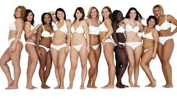
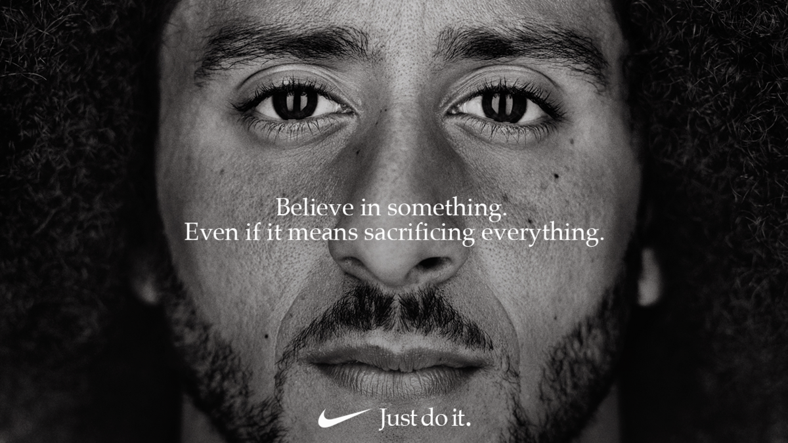
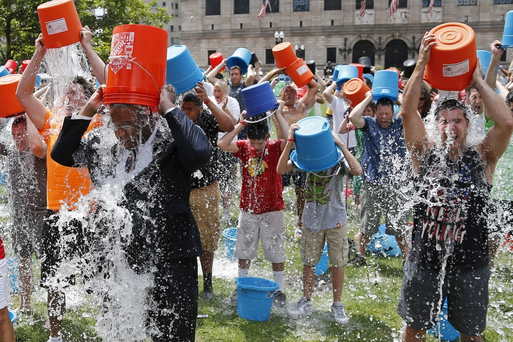
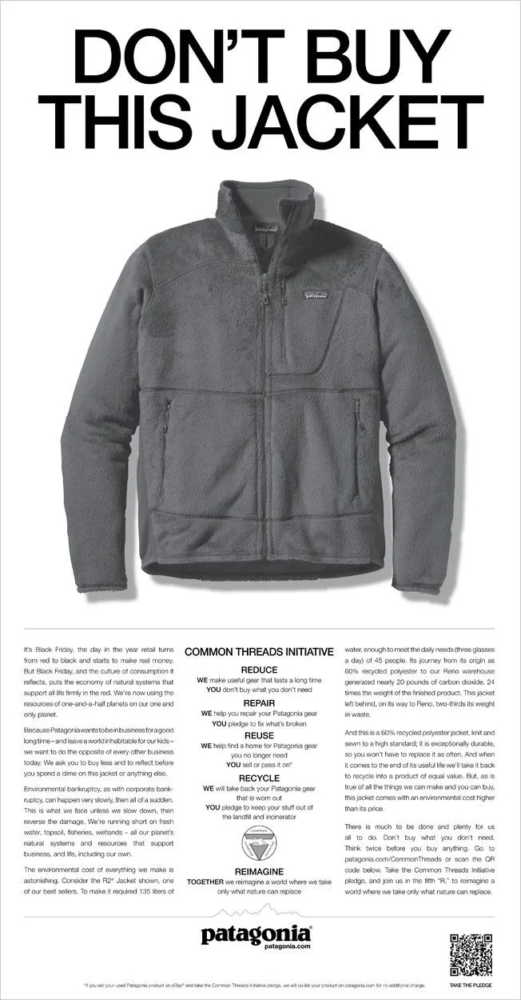

Understanding Ethos, Pathos, and Logos for persuasive, contagious content.
What is Aristotle’s Rhetorical Triangle?
Aristotle’s Rhetorical Triangle, also known as the Aristotelian Appeals, is a persuasion framework consisting of three elements: Ethos (credibility), Pathos (emotion), and Logos (logic). Developed by the ancient Greek philosopher Aristotle, it guides the creation of messages that convince and resonate with audiences. In public relations, the triangle helps PR professionals craft campaigns that build trust, evoke emotions, and provide logical reasons to engage, making content compelling and shareable—truly contagious.
- Ethos (Credibility): Establishes the speaker, brand, or organization as trustworthy and authoritative. It answers, “Why should the audience believe you?”
- Pathos (Emotion): Appeals to emotions to inspire action or connection. It answers, “How can you make the audience feel something?”
- Logos (Logic): Uses facts, data, or reasoning to support the message. It answers, “Why does this make sense?”
In PR, combining these appeals creates messages that resonate with stakeholders, drive engagement, and amplify reach, especially on platforms like X, where contagious content can go viral.
How is the Rhetorical Triangle Used in Public Relations?
In public relations, the Rhetorical Triangle is a cornerstone for crafting messages that align with organizational goals, such as building brand reputation, promoting events, or managing crises. PR professionals use Ethos to establish trust, Pathos to connect emotionally, and Logos to provide evidence, ensuring messages resonate with diverse audiences. For PR Pros Toastmasters, the triangle is key to creating social media posts, event promotions, and campaigns that attract members and boost engagement.
Key Applications in PR:
- Building Brand Trust (Ethos): Highlight expertise, endorsements, or achievements to establish credibility.
Example: A brand showcasing industry awards to build consumer trust.
- Engaging Audiences Emotionally (Pathos): Use storytelling, humor, or urgency to spark emotions that drive action, such as sharing or purchasing.
Example: A campaign evoking joy to promote a product launch.
- Providing Clear Value (Logos): Include data, benefits, or logical arguments to convince audiences of the message’s worth.
Example: Citing statistics to prove a service’s effectiveness.
- Creating Viral Content: Balancing Ethos, Pathos, and Logos makes content compelling and shareable, aligning with the “contagious” theme. Credible sources, emotional hooks, and logical arguments drive virality.
Real-Life Public Relations Examples
Below are four real-life PR campaign examples from well-known brands or initiatives, demonstrating how Ethos, Pathos, and Logos create contagious content. These examples provide inspiration for PR Pros Toastmasters to apply similar strategies.
1. Dove’s “Real Beauty” Campaign (2004–Present)
Message: “You are more beautiful than you think. Join Dove to celebrate real beauty!”
- Ethos: Dove partners with psychologists and features real women, citing studies on self-esteem.
- Pathos: Evokes self-doubt and empowerment; emotional storytelling (e.g., “Real Beauty Sketches”).
- Logos: Data: “Only 4% of women worldwide consider themselves beautiful.” Logical solution: embracing real beauty.
- Why Contagious? Authentic voices, emotional storytelling, research-backed message.

2. Nike’s “Just Do It” Colin Kaepernick Ad (2018)
Message: “Believe in something, even if it means sacrificing everything.”
- Ethos: Nike’s global brand and Kaepernick’s status as athlete/activist.
- Pathos: Taps into courage, sacrifice, inspiration; powerful imagery.
- Logos: Highlights Nike’s history of supporting athletes; sales increased 31% post-campaign.
- Why Contagious? Controversial yet inspiring message, brand backing, credibility.

3. ALS Ice Bucket Challenge (2014)
Message: “Dump ice water on your head, donate to ALS, and challenge friends to join!”
- Ethos: Endorsements from celebrities (Oprah) and ALS Association.
- Pathos: Fun, shocking act; empathy from patient stories.
- Logos: Raised $115 million for research; simple, clear rules.
- Why Contagious? Credible backing, emotional storytelling, clear call to action.

4. Patagonia’s “Don’t Buy This Jacket” Campaign (2011)
Message: “Don’t buy this jacket unless you need it—join us to protect the planet.”
- Ethos: Patagonia’s eco-conscious reputation and environmental advocacy.
- Pathos: Evokes guilt and inspiration regarding overconsumption.
- Logos: Data on CO2 emissions; logical actions: repair, reuse, recycle.
- Why Contagious? Counterintuitive message, credibility, environmental data.

Toastmasters-Specific Examples
Below are four PR examples tailored for PR Pros Toastmasters, showing how to apply Ethos, Pathos, and Logos to promote the club.
1. Social Media Post for an Open House
Message: “Terrified of public speaking? Join PR Pros Toastmasters’ Open House on October 15 and discover how our award-winning club has helped 100+ members conquer stage fright in just 30 days!”
- Ethos: “Award-winning club” and “100+ members.”
- Pathos: Taps into fear, inspires hope.
- Logos: “In just 30 days” provides a clear timeline.
2. Press Release for a Speech Contest
Message: “PR Pros Toastmasters, a globally recognized leader in communication training, invites you to our October 20 Speech Contest. Witness local professionals transform nerves into brilliance, as 9 out of 10 participants report career-boosting confidence (Toastmasters International, 2024).”
- Ethos: “Globally recognized leader,” Toastmasters International citation.
- Pathos: “Transform nerves into brilliance” evokes awe.
- Logos: “9 out of 10 participants” uses data.
3. Email Campaign for Membership Drive
Message: “Don’t miss your chance to join PR Pros Toastmasters by October 31! Our certified mentors, featured in Forbes for leadership training, will help you master public speaking. Feel the thrill of delivering your first fearless speech!”
- Ethos: “Certified mentors,” “featured in Forbes.”
- Pathos: “Feel the thrill” evokes excitement.
- Logos: “By October 31” creates a logical deadline.
4. Viral Meme for Club Promotion
Message: Image of Drake rejecting “Boring meetings” and approving “PR Pros Toastmasters’ Viral Speech Workshop.” Caption: “Join us October 25 to learn from top speakers and boost your confidence by 40%!”
- Ethos: “Top speakers” implies credible mentors.
- Pathos: Humorous meme, “boost your confidence.”
- Logos: “Boost your confidence by 40%” quantifiable benefit.
How to Apply the Rhetorical Triangle in PR Pros Toastmasters
To make your club’s content contagious, follow these steps when crafting PR materials:
- Establish Ethos: Highlight the club’s achievements, member testimonials, or Toastmasters International affiliations.
Example: “Our club has produced 5 District Champions since 2020.”
- Evoke Pathos: Use storytelling, humor, or urgency to connect emotionally, focusing on feelings like fear of public speaking or excitement for growth.
Example: “Imagine standing ovations after your speech—join us to make it happen!”
- Leverage Logos: Include data, clear benefits, or logical arguments to make your message undeniable.
Example: “80% of Toastmasters members report improved leadership skills (Toastmasters International, 2023).”
- Balance All Three: Combine credibility, emotion, and logic for maximum impact, as seen in campaigns like Dove’s or Nike’s. Test your message: Does it build trust? Spark feeling? Make sense?
- Test for Contagiousness: Ask, “Would I share this?” Ensure content is engaging, relevant, and timely, like the ALS Ice Bucket Challenge.
Why It Matters for PR Pros Toastmasters
At PR Pros Toastmasters, the Rhetorical Triangle is the key to creating content that promotes our club effectively. By mastering Ethos, Pathos, and Logos, you can craft posts, emails, and campaigns that attract new members, engage communities, and make PR Pros Toastmasters a viral sensation. In the Viral Fame Lab, use these appeals to make your content so contagious that “even your posts about toast” spark a social media frenzy.